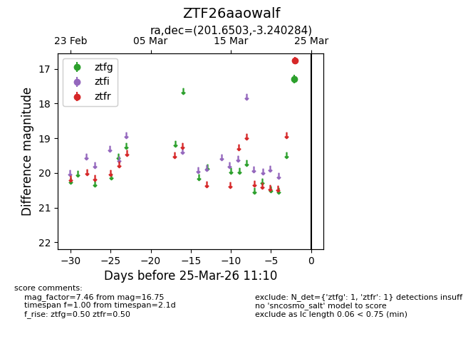
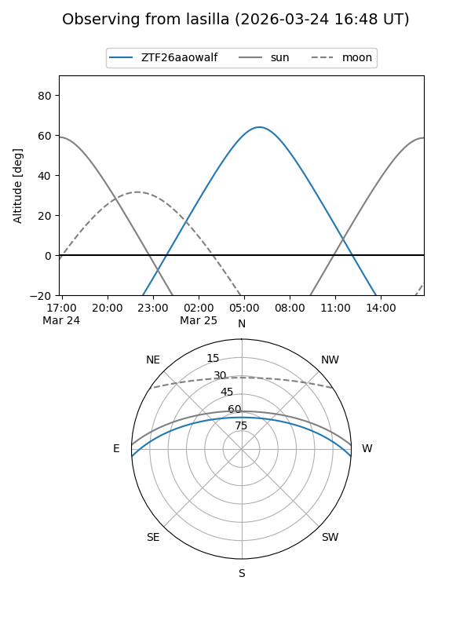
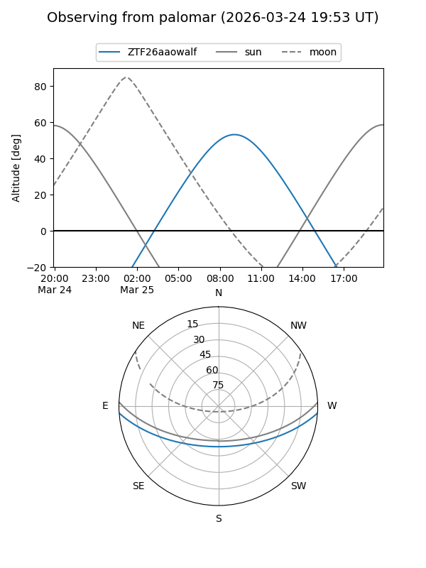

ZTF26aaowalf
Target ZTF26aaowalf at 2026-03-25 11:13
Aliases and brokers:
FINK: link
Lasair: link
ALeRCE: link
alt names
ZTF26aaowalf (ztf,fink_ztf)
Coordinates:
equatorial (ra, dec) = 201.6503,-3.24028
equatorial (HMS+DMS) = 13:26:36.08,-03:14:25.02
galactic (l, b) = (319.8956,+58.46855)
Flags:
Photometry:
last ztfg=17.29, ztfr=16.75
1 ztfg, 1 ztfr detections
Lightcurve

Visibility


Additional plots